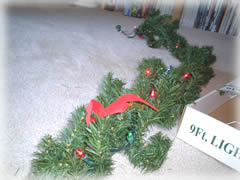
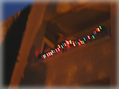
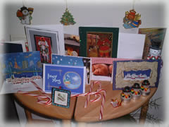

| ..*..*.. 2002年12月27日(金) 晴れ ..*..*.. 日本だと、もうクリスマスの飾り付けはしまわれちゃってるのでしょうね。こちらはお正月の飾り付けはないので、クリスマスの飾りは、そんなに早くしまいません。 毎年、クリスマスツリーをどうするかは悩むところでした。クリスマスシーズンになると、かなりの家庭がこんな風に生のクリスマスツリーを飾ります。でも、終わるとツリーが無惨に捨てられているのを見ると、なかなか買う気にならないんですよね。せっかく時間をかけて育ったのに、クリスマスのためだけに切り取られて、楽しまれたあとは捨てられる...と思うと。  でも、ひとみさんの家のクリスマスツリーの影響を受けて、今年はこんなに小さい鉢植えのツリー(上の写真)を買ってみました。クリスマスの時期が終わったら育ててみたいと思います。うまくいけば、来年もつかえるかも。。。 他にも窓辺につけるライトはこんな感じのを買いました(左の写真)。シンプルな一色だけのより、こういうカラフルな方が好きです。他にも、白だけとか、青だけとかのもあって、それなりにきれいです。  外からみるとこんな感じになります。ピンぼけですみません(汗) たまたま下の階の人もカラフルなタイプのライトをつけているので、上下でつけると色があっていてきれいです。でも、下の人はよくライトをつけ忘れて、夜でもライトがともらない日が多いから残念。 今年は12月中旬がずっと嵐だったので、家々が取り付けるようになったのは、20日くらいからでした。  いただいたクリスマスカードはこんな風に一か所に集めて立てています。これも、1月の1週めくらいまでは、しまわないで置いておきます。 こちらのクリスマスは、感謝祭同様、家族と過ごす人が多いです。交換したプレゼントは25日の朝に開けます。クリスマスに会えない場合は、お互いプレゼントを郵送しておいて、25日までツリーの下に箱を開けない状態で置いておきます。そして、25日になったら開けるのです。 うちは、今回はチキンを焼きました。感謝祭のときのターキーの要領でつくりました。あとはシュトーレン、パントーネ（クリスマスのパン）、スープ、サラダなど。 冷えたシャンパンで乾杯( ^^)／□☆□＼(^^ ) |